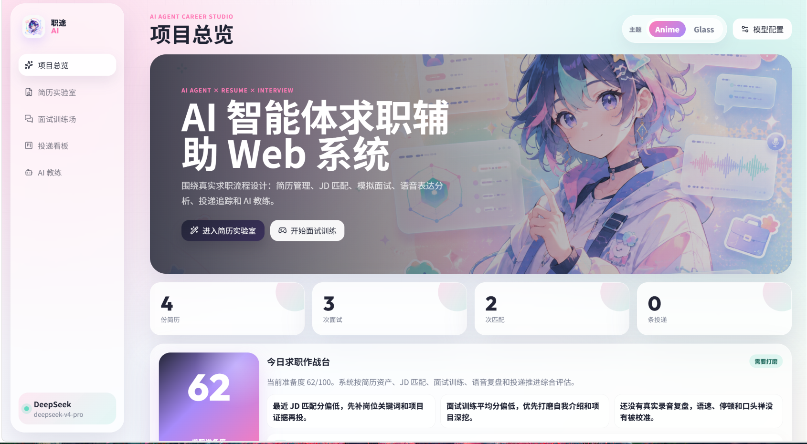
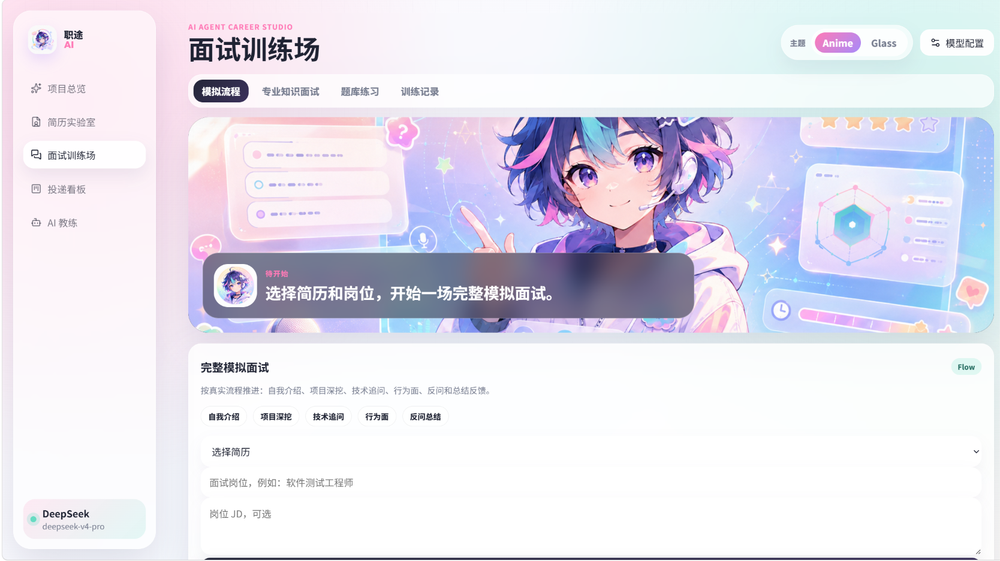
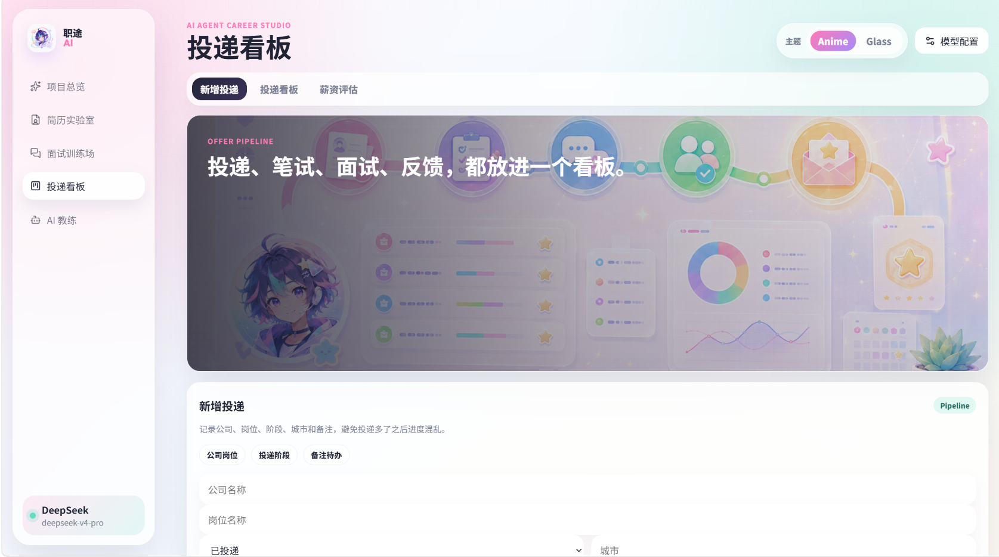
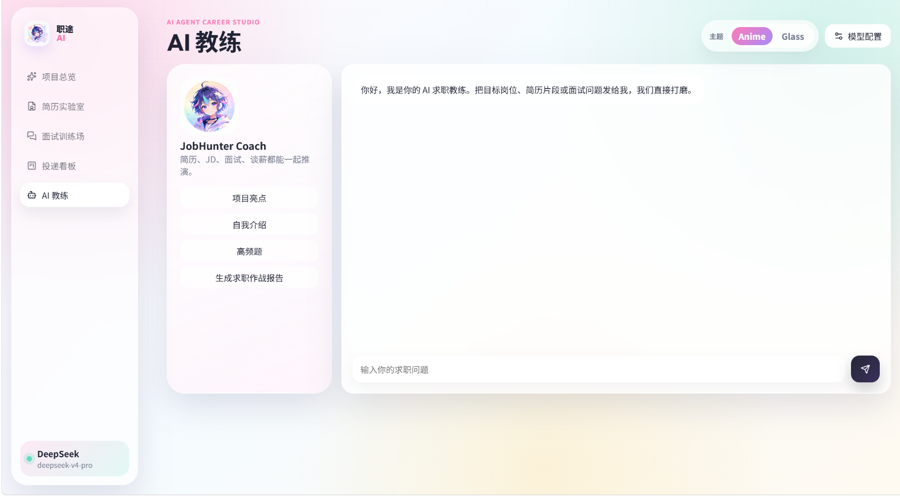

Product Modules
功能模块设计
每个模块都对应真实求职任务，并把结果沉淀到后续流程。系统支持计算机、运营、市场、财务、教育、行政人事等求职方向，避免功能只服务单一专业。
项目总览
汇总简历、面试、JD 匹配、投递数据，生成职业脉冲评分和下一步行动。
简历录入与编辑
支持文本录入、Word / PDF 上传、原文件保存、在线编辑、替换文件和打开原始文件。
简历分析与修改
从结构、项目证据、技能覆盖、量化表达、风险点等维度做客观分析。
JD 定制优化
粘贴真实 JD 后计算关键词命中、匹配度、能力差距和项目改写方向。
多专业求职画像
不同专业会切换题库、技能雷达、JD 分析重点和模拟面试追问，让非计算机专业也能按自己的岗位方向使用。
技能图谱
根据简历提取技能关键词，生成雷达图、短板清单和补强路线。
模拟真实面试
按自我介绍、项目深挖、技术追问、行为面、反问总结推进训练流程。
语音回答复盘
支持语音转文字、真实录音、回放、语速停顿分析和表达建议。
投递看板与教练
管理岗位阶段，生成跟进建议、薪资评估、复盘提醒和阶段性作战报告。
Visual System
双主题视觉系统
系统内置 Anime 和 Glass 两套风格。主题切换会同步影响 Logo、背景、Hero、卡片、视觉素材和状态组件，保证从首页到业务模块都保持一致。
.png)
Anime Theme
二次元轻潮流
柔和粉、薄荷绿、浅紫、插画角色和漂浮 UI 元素，让求职训练更轻松、更有陪伴感。
Glass Theme
液态玻璃科技感
使用项目中的真实首页视觉素材，以透明面板、深色层次和数据化组件强调 AI 求职工作台的工具属性。
Real Product Screens
真实页面实景
展示页不仅说明系统做了什么，也直接呈现每个核心模块的实际界面，让功能、流程和视觉风格能一眼对应起来。

Dashboard
项目总览
首页把简历、面试、JD 匹配和投递数据聚合成一张求职作战台，并提供真实求职体验路线，用户可以快速看到当前准备度和下一步优先事项。
职业脉冲评分与待办建议
按方向选择求职画像
简历、面试、匹配、投递数据汇总

Resume Lab
简历实验室
围绕简历全生命周期设计，从上传、保存原件、文本解析，到分析修改、JD 优化、技能图谱和格式导出，形成可持续维护的简历资产。
上传 / 粘贴 / 保存原件一体化
简历分析、修改、JD 优化分入口操作
PDF / Word 导出转换与技能图谱

Interview Studio
面试训练场
模拟真实面试推进路径，用户选择简历和岗位后进入流程化训练，同时保留专业知识面试、题库练习和训练记录。
自我介绍、项目深挖、技术追问分阶段推进
语音回答、录音回放和表达复盘
训练记录可查看答题与反馈情况

Offer Pipeline
投递看板
把公司、岗位、阶段、城市、备注和薪资评估放进同一个看板，避免投递多了以后进度混乱，也便于后续复盘。
新增投递与阶段管理
投递进度、反馈、备注集中沉淀
薪资评估和跟进建议辅助决策

AI Coach
AI 教练
面向求职过程中的即时问题提供轻量对话入口，可围绕项目亮点、自我介绍、高频题和求职作战报告快速生成建议。
按求职场景快速提问
联动简历、JD、面试和投递数据
未配置 Key 时支持本地规则兜底
Career Loop
业务闭环
系统把分散的求职动作串成可追踪流程，每一步的数据都会进入后续智能分析。
1. 建立简历资产上传或录入简历，保留原始文件和解析文本。
2. 获取真实 JD从招聘平台复制岗位描述，提取技能和职责关键词。
3. 定制简历生成匹配分、缺口清单、改写建议和面试讲述点。
4. 面试训练按真实流程训练，保存回答、录音和反馈。
5. 投递跟进维护岗位阶段，生成跟进话术和风险提醒。
6. 复盘提升职业脉冲汇总全局数据，给出下一步行动。
Tech Stack
技术栈完整说明
项目采用轻量可运行架构，同时覆盖文件处理、模型调用、语音能力、图表渲染和数据持久化。
分层架构
- 表现层：原生 HTML / CSS / JavaScript 实现工作台、双主题、图表、录音交互和模块跳转。
- 业务层：Flask 组织简历、JD、面试、投递、训练记录和 AI 教练等流程。
- 数据层：SQLite 保存结构化业务数据，上传文件和导出文件独立存放。
- 智能层：统一 AI 网关接入 GLM、DeepSeek、Kimi，并提供本地规则兜底。
- 质量层：通过 py_compile、node --check、unittest 和 Git 忽略规范保障交付质量。
Agent Ability
后端智能体能力
- 统一封装模型供应商、模型 ID、API Key、请求参数和返回结构。
- 按任务类型构造提示词：简历分析、JD 优化、面试追问、语音表达、投递复盘。
- AI 失败时自动回落本地规则，不影响核心流程使用。
- 面试会话保存阶段状态，支持按流程追问，而不是普通闲聊。
- 针对“不知道、跳过、下一题”等回答做幻觉控制，给出合理反馈。
Model Gateway
模型配置
| 厂商 | 模型 | 用途 |
|---|---|---|
| 智谱 GLM | glm-4.7-flash | 默认保留模型，适合通用分析和快速反馈。 |
| DeepSeek | deepseek-v4-flash / deepseek-v4-pro | 适合 JD 分析、推理型简历优化和结构化反馈。 |
| Kimi / Moonshot | kimi-2.6 / moonshot 系列 | 适合长文本简历、长 JD 和多轮面试上下文。 |
| 自定义模型 | 用户输入模型 ID | 适配后续新增模型或 OpenAI 兼容接口。 |
Career Flow
从准备到投递，一路推进
简历、JD、面试、语音和投递记录在同一个工作台里持续流动。